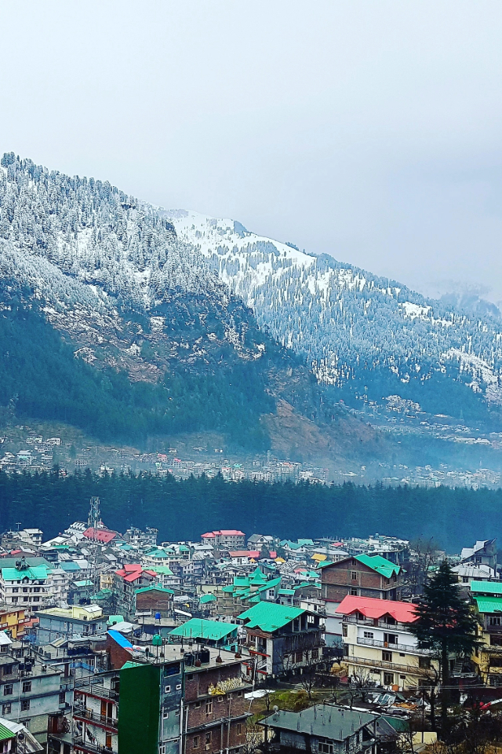

# Manali: A Paradise for Travelers in the Heart of the Himalayas Nestled in the scenic Kullu Valley in Himachal Pradesh, Manali is a perfect blend of natural beauty, adventure, and serenity. Whether you're a nature enthusiast, an adventure seeker, or someone simply looking to relax and rejuvenate, Manali offers something for everyone. With snow-capped peaks, lush green valleys, crystal-clear rivers, and charming villages, this hill station has earned its reputation as one of the most sought-after destinations in India. In this blog, we’ll take you on a virtual journey through Manali, exploring its top attractions, things to do, and the best times to visit. ### Why Visit Manali? Manali is not just a destination; it’s an experience. Situated at an altitude of 2,050 meters (6,726 feet), Manali is surrounded by towering Himalayan peaks and dense forests, offering a stunning backdrop for any adventure. The town has a laid-back vibe but offers plenty of thrilling activities, making it an ideal getaway for both relaxation and excitement. ### Top Attractions in Manali 1. **Rohtang Pass** One of the most famous attractions near Manali, Rohtang Pass sits at an altitude of 3,978 meters (13,051 feet). It offers breathtaking views of the surrounding mountains and is a gateway to the Lahaul and Spiti valleys. If you're visiting between May and November (before the pass closes due to heavy snow), you can enjoy activities like skiing, snowboarding, and sledging. 2. **Solang Valley** Known for its adventure sports, Solang Valley is a year-round destination. Whether it’s paragliding, zorbing, skiing in the winter, or trekking in the summer, Solang Valley caters to adrenaline junkies of all types. The valley also offers splendid views of glaciers and peaks, making it an idyllic spot for photography. 3. **Hadimba Temple** One of the most unique temples in Manali, the Hadimba Temple is surrounded by a lush cedar forest. This 16th-century temple, dedicated to Goddess Hadimba, features intricate wood carvings and a serene atmosphere that attracts both spiritual seekers and history buffs alike. 4. **Manu Temple** A serene and relatively less crowded spot, the Manu Temple is dedicated to the sage Manu, who is believed to be the creator of the human race according to Hindu mythology. It’s located in Old Manali and provides a peaceful setting to reflect on the natural beauty around. 5. **Old Manali** A charming area with a bohemian vibe, Old Manali is the perfect place for travelers who wish to explore the town's more laid-back side. Narrow lanes, rustic cafes, small guesthouses, and stunning views of the Beas River make Old Manali a popular hangout for backpackers and those seeking a peaceful retreat. 6. **Beas River and River Rafting** The Beas River runs through the heart of Manali, offering scenic views and plenty of opportunities for adventure. River rafting in the Beas is a popular activity, with rapids ranging from easy to moderately challenging. Whether you're a first-timer or an experienced rafter, it’s an experience worth having. 7. **Naggar Castle and Art Gallery** Located about 22 kilometers from Manali, Naggar Castle is a 16th-century structure that offers panoramic views of the surrounding mountains and valleys. The castle now serves as a heritage hotel, and nearby, you can explore the Naggar Art Gallery, which houses works by renowned Russian artist Nicholas Roerich.
### Adventure Activities in Manali Manali is a mecca for adventure lovers. Here are some exciting activities you can indulge in during your trip: - **Trekking**: There are several trekking trails around Manali, ranging from easy to challenging. Popular treks include the *Beas Kund Trek* (moderate level) and the *Great Himalayan National Park Trek* (difficult level). - **Skiing and Snowboarding**: During the winter months (December to February), the snow-clad slopes of Solang Valley and Rohtang Pass offer fantastic skiing and snowboarding opportunities. - **Paragliding**: Solang Valley and Bir-Billing (a short drive from Manali) are popular paragliding spots. Glide over the valleys and get a bird’s-eye view of the picturesque landscape. - **Mountain Biking**: For those who enjoy biking, the rugged terrain around Manali provides ample opportunities for mountain biking, with well-marked trails taking you through forests, villages, and high-altitude roads. ### Where to Stay in Manali Manali caters to all kinds of travelers, offering a wide range of accommodation options, from budget hostels to luxury resorts. Here are a few recommendations: - **Luxury**: If you're looking for a luxurious stay, you can choose from hotels like *The Himalayan*, *Span Resort & Spa*, or *Apple Country Resort*, which offer excellent views, top-notch amenities, and comfortable rooms. - **Mid-Range**: For mid-range accommodation, *Manali Heights* and *The River Crescent Resort* are great options with scenic views and modern facilities. - **Budget**: Backpackers and budget travelers can opt for places like *The Lost Tribe Hostel*, *Zostel Manali*, or *Old Manali Café & Hostel* for an affordable yet cozy stay. ### Best Time to Visit Manali Manali is a year-round destination, but the best time to visit depends on what kind of experience you are looking for. - **Summer (March to June)**: Summer in Manali is pleasant, with temperatures ranging from 10°C to 25°C, making it ideal for sightseeing, outdoor activities, and exploring the town. - **Monsoon (July to September)**: While the lush green landscape looks appealing, this is the season for heavy rainfall, which could cause landslides and travel disruptions. If you plan to visit during this time, be prepared for potential weather challenges. - **Winter (October to February)**: Winter in Manali is magical, with the town and surrounding areas blanketed in snow. If you’re into snow sports like skiing or snowboarding, this is the best time to visit. ### Local Cuisine to Try Manali is known for its delicious local Himachali cuisine. Here are some dishes you must try: - **Chana Madra**: A flavorful curry made with chickpeas, yogurt, and a variety of spices. - **Dham**: A traditional Himachali feast, which includes rice, lentils, and vegetables, served with yogurt. - **Sidu**: A local bread made from wheat flour, usually served with ghee and chutney. - **Tandoori Momos**: A variation of the classic momo, these dumplings are roasted and served hot with spicy chutney. ### Conclusion Manali is more than just a hill station; it’s a magical destination that brings together nature, adventure, culture, and tranquility in one place. Whether you're soaking in the beauty of its landscapes, indulging in thrilling activities, or exploring the town's rich cultural heritage, Manali never fails to captivate the hearts of its visitors. So, pack your bags, hit the road, and embark on an unforgettable journey to Manali — where the mountains meet the sky, and every moment is a memory waiting to be made. --- *Note: Always check the local travel advisories and weather conditions before planning your trip to Manali.*